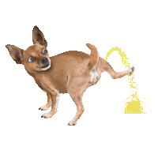
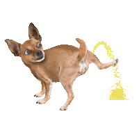
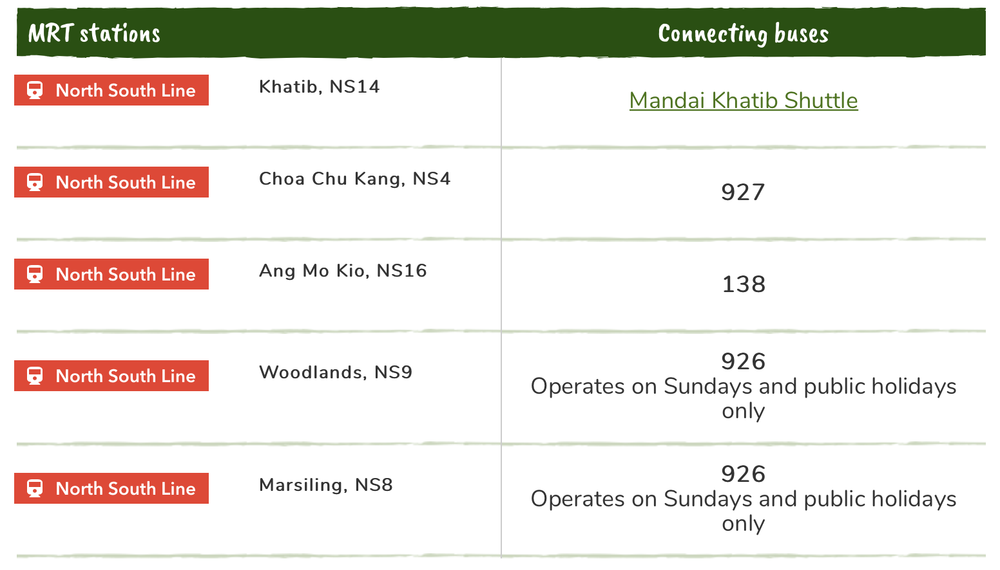

If you are taking the North-South MRT line, you can take the train to any of the MRT stations below. From there, you can hop on a connecting bus that will take you straight to Singapore Zoo.

Besides driving your own vehicle or taking the Mrt at designated stops on the North South Line, there are other forms of transport. Click on the image below for more information.